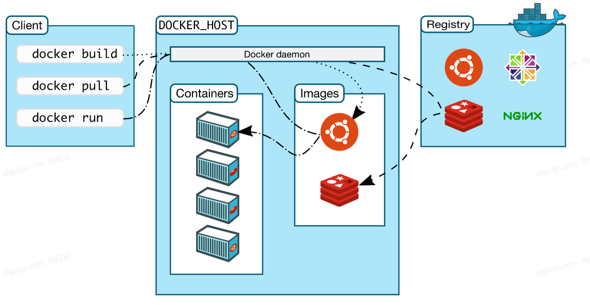
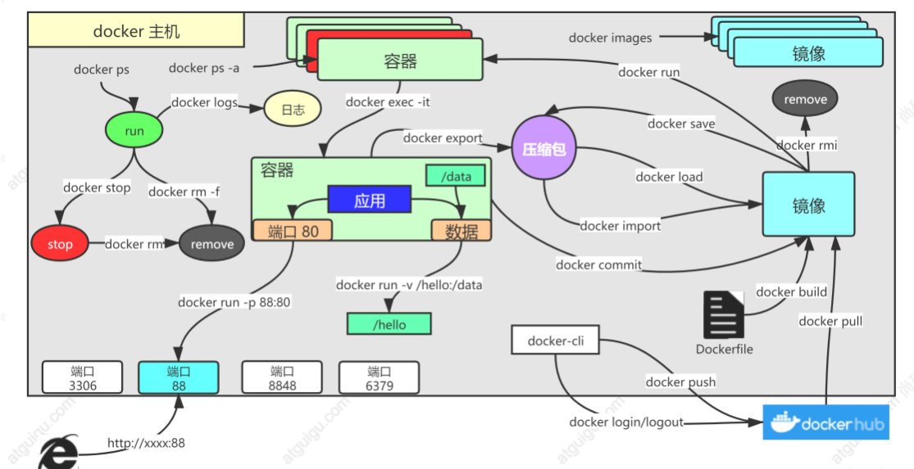
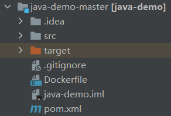
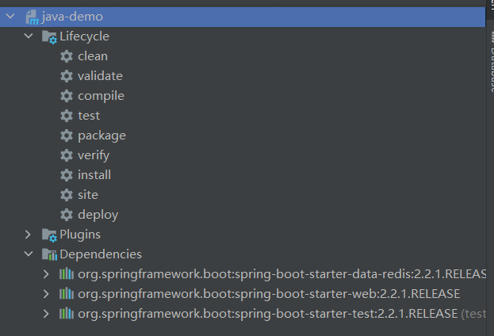
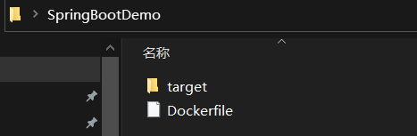

<!DOCTYPE html>


<html lang="zh-Hans">
  

    <head>
      <meta charset="utf-8" />
        
      <meta name="description" content="Technical output and problem solving record" />
      
      <meta
        name="viewport"
        content="width=device-width, initial-scale=1, maximum-scale=1"
      />
      <title>01云原生--Docker容器 |  Tunan`s Blog</title>
  <meta name="generator" content="hexo-theme-ayer">
      
      <link rel="shortcut icon" href="/favicon.ico" />
       
<link rel="stylesheet" href="/dist/main.css">

      <link
        rel="stylesheet"
        href="https://cdn.jsdelivr.net/gh/Shen-Yu/cdn/css/remixicon.min.css"
      />
      
<link rel="stylesheet" href="/css/custom.css">
 
      <script src="https://cdn.jsdelivr.net/npm/pace-js@1.0.2/pace.min.js"></script>
       
 

      <link
        rel="stylesheet"
        href="https://cdn.jsdelivr.net/npm/@sweetalert2/theme-bulma@5.0.1/bulma.min.css"
      />
      <script src="https://cdn.jsdelivr.net/npm/sweetalert2@11.0.19/dist/sweetalert2.min.js"></script>

      <!-- mermaid -->
      
      <style>
        .swal2-styled.swal2-confirm {
          font-size: 1.6rem;
        }
      </style>
    </head>
  </html>
</html>


<body>
  <div id="app">
    
      
    <main class="content on">
      <section class="outer">
  <article
  id="post-01云原生-Docker容器"
  class="article article-type-post"
  itemscope
  itemprop="blogPost"
  data-scroll-reveal
>
  <div class="article-inner">
    
    <header class="article-header">
       
<h1 class="article-title sea-center" style="border-left:0" itemprop="name">
  01云原生--Docker容器
</h1>
 

      
    </header>
     
    <div class="article-meta">
      <a href="/2022/03/24/01%E4%BA%91%E5%8E%9F%E7%94%9F-Docker%E5%AE%B9%E5%99%A8/" class="article-date">
  <time datetime="2022-03-24T01:50:04.000Z" itemprop="datePublished">2022-03-24</time>
</a> 
  <div class="article-category">
    <a class="article-category-link" href="/categories/%E4%BA%91%E5%8E%9F%E7%94%9F/">云原生</a>
  </div>
  
<div class="word_count">
    <span class="post-time">
        <span class="post-meta-item-icon">
            <i class="ri-quill-pen-line"></i>
            <span class="post-meta-item-text"> Word count:</span>
            <span class="post-count">1.3k</span>
        </span>
    </span>

    <span class="post-time">
        &nbsp; | &nbsp;
        <span class="post-meta-item-icon">
            <i class="ri-book-open-line"></i>
            <span class="post-meta-item-text"> Reading time≈</span>
            <span class="post-count">5 min</span>
        </span>
    </span>
</div>
 
    </div>
      
    <div class="tocbot"></div>


  
    <div class="article-entry" itemprop="articleBody">
       
  <h1 id="Docker基础"><a href="#Docker基础" class="headerlink" title="Docker基础"></a>Docker基础</h1><h2 id="基本概念"><a href="#基本概念" class="headerlink" title="基本概念"></a>基本概念</h2><p>Docker本身是一个容器运行载体或称之为管理引擎，基于Go语言开发的。我们把应用程序和配置依赖打包好，形成一个可交付的运行环境，这个打包好的运行环境，就是image镜像文件。只有通过这个镜像文件才能生成Docker容器。image文件可以看作是容器的模板。Docker根据image文件生成容器实例，同一个镜像文件，可以生成多个同时运行的容器实例。<span id="more"></span></p>
<h3 id="统一标准"><a href="#统一标准" class="headerlink" title="统一标准"></a>统一标准</h3><p>Docker做到了应用构建的统一标准，不管是Java、C++还是JavaScript的应用，都可以通过run build 【镜像名】打包成镜像，解决了之前在云上部署应用的不同形式（jar、dict等）；并且docker可以将所有软件的镜像放到一个统一的仓库docker hub，就像maven仓库一样；最后运行也很简单，执行统一标准的镜像，使用docker run命令即可。</p>
<h3 id="资源隔离"><a href="#资源隔离" class="headerlink" title="资源隔离"></a>资源隔离</h3><ul>
<li>cpu、memory资源隔离与限制</li>
<li>访问设备隔离与限制</li>
<li>网络隔离与限制</li>
<li>用户、用户组隔离限制</li>
<li>……</li>
</ul>
<h2 id="架构"><a href="#架构" class="headerlink" title="架构"></a>架构</h2><p></p>
<ul>
<li><p>Docker_Host：</p>
</li>
<li><ul>
<li>安装Docker的主机</li>
</ul>
</li>
<li><p>Docker Daemon：</p>
</li>
<li><ul>
<li>运行在Docker主机上的Docker后台进程</li>
</ul>
</li>
<li><p>Client：</p>
</li>
<li><ul>
<li>操作Docker主机的客户端（命令行、UI等）</li>
</ul>
</li>
<li><p>Registry：</p>
</li>
<li><ul>
<li>镜像仓库</li>
<li>Docker Hub</li>
</ul>
</li>
<li><p>Images：</p>
</li>
<li><ul>
<li>镜像，带环境打包好的程序，可以直接启动运行</li>
</ul>
</li>
<li><p>Containers：</p>
</li>
<li><ul>
<li>容器，由镜像启动起来正在运行中的程序</li>
</ul>
</li>
</ul>
<p><strong>交互逻辑</strong> ： 装好<strong>Docker</strong>，然后去 <strong>软件市场</strong> 寻找<strong>镜像</strong>，下载并运行，查看<strong>容器</strong>状态日志等排错</p>
<h2 id="Docker安装"><a href="#Docker安装" class="headerlink" title="Docker安装"></a>Docker安装</h2><h3 id="1、移除以前的包"><a href="#1、移除以前的包" class="headerlink" title="1、移除以前的包"></a>1、移除以前的包</h3><pre><code class="bash">sudo yum remove docker \
                  docker-client \
                  docker-client-latest \
                  docker-common \
                  docker-latest \
                  docker-latest-logrotate \
                  docker-logrotate \
                  docker-engine
</code></pre>
<h3 id="2、配置yum源"><a href="#2、配置yum源" class="headerlink" title="2、配置yum源"></a>2、配置yum源</h3><pre><code class="bash">sudo yum install -y yum-utils
sudo yum-config-manager \
--add-repo \
http://mirrors.aliyun.com/docker-ce/linux/centos/docker-ce.repo
</code></pre>
<h3 id="3、安装docker"><a href="#3、安装docker" class="headerlink" title="3、安装docker"></a>3、安装docker</h3><pre><code class="bash">sudo yum install -y docker-ce docker-ce-cli containerd.io
</code></pre>
<h3 id="4、启动"><a href="#4、启动" class="headerlink" title="4、启动"></a>4、启动</h3><pre><code class="bash">systemctl enable docker --now
</code></pre>
<h3 id="5、配置加速"><a href="#5、配置加速" class="headerlink" title="5、配置加速"></a>5、配置加速</h3><pre><code class="bash">sudo mkdir -p /etc/docker
sudo tee /etc/docker/daemon.json &lt;&lt;-&#39;EOF&#39;
&#123;
  &quot;registry-mirrors&quot;: [&quot;https://82m9ar63.mirror.aliyuncs.com&quot;],
  &quot;exec-opts&quot;: [&quot;native.cgroupdriver=systemd&quot;],
  &quot;log-driver&quot;: &quot;json-file&quot;,
  &quot;log-opts&quot;: &#123;
    &quot;max-size&quot;: &quot;100m&quot;
  &#125;,
  &quot;storage-driver&quot;: &quot;overlay2&quot;
&#125;
EOF
sudo systemctl daemon-reload
sudo systemctl restart docker
</code></pre>
<h1 id="Docker实战"><a href="#Docker实战" class="headerlink" title="Docker实战"></a>Docker实战</h1><h2 id="常用命令"><a href="#常用命令" class="headerlink" title="常用命令"></a>常用命令</h2><p></p>
<h3 id="1、找镜像"><a href="#1、找镜像" class="headerlink" title="1、找镜像"></a>1、找镜像</h3><p>去<a target="_blank" rel="noopener" href="http://hub.docker.com/">docker hub</a>，找到nginx镜像</p>
<pre><code class="bash">docker pull nginx  #下载最新版

镜像名:版本名（标签）

docker pull nginx:1.20.1


docker pull redis  #下载最新
docker pull redis:6.2.4

## 下载来的镜像都在本地
docker images  #查看所有镜像

redis = redis:latest

docker rmi 镜像名:版本号/镜像id
</code></pre>
<h3 id="2、启动容器"><a href="#2、启动容器" class="headerlink" title="2、启动容器"></a>2、启动容器</h3><p>启动nginx应用容器，并映射88端口，测试的访问</p>
<pre><code class="bash">docker run [OPTIONS] IMAGE [COMMAND] [ARG...]

【docker run  设置项   镜像名  】 镜像启动运行的命令（镜像里面默认有的，一般不会写）

# -d：后台运行
# --restart=always: 开机自启
docker run --name=mynginx   -d  --restart=always -p  88:80   nginx


# 查看正在运行的容器
docker ps
# 查看所有
docker ps -a
# 删除停止的容器
docker rm  容器id/名字
docker rm -f mynginx   #强制删除正在运行中的

#停止容器
docker stop 容器id/名字
#再次启动
docker start 容器id/名字

#应用开机自启
docker update 容器id/名字 --restart=always
</code></pre>
<h3 id="3、修改容器内容"><a href="#3、修改容器内容" class="headerlink" title="3、修改容器内容"></a>3、修改容器内容</h3><pre><code class="bash"># 进入容器内部的系统，修改容器内容
docker exec -it 容器id  /bin/bash

# 挂载数据到外部修改
docker run --name=mynginx   \
-d  --restart=always \
-p  88:80 -v /data/html:/usr/share/nginx/html:ro  \
nginx

# 修改页面只需要去 主机的 /data/html
</code></pre>
<h3 id="4、提交改变"><a href="#4、提交改变" class="headerlink" title="4、提交改变"></a>4、提交改变</h3><pre><code class="java">docker commit [OPTIONS] CONTAINER [REPOSITORY[:TAG]]

docker commit -a &quot;leifengyang&quot;  -m &quot;首页变化&quot; 341d81f7504f guignginx:v1.0
    
# 将镜像保存成压缩包
docker save -o abc.tar guignginx:v1.0

# 别的机器加载这个镜像
docker load -i abc.tar


# 离线安装
</code></pre>
<h3 id="5、推送远程仓库"><a href="#5、推送远程仓库" class="headerlink" title="5、推送远程仓库"></a>5、推送远程仓库</h3><pre><code class="bash">docker tag local-image:tagname new-repo:tagname
docker push new-repo:tagname

# 把旧镜像的名字，改成仓库要求的新版名字
docker tag guignginx:v1.0 leifengyang/guignginx:v1.0

# 登录到docker hub
docker login       


docker logout（推送完成镜像后退出）

# 推送
docker push leifengyang/guignginx:v1.0


# 别的机器下载
docker pull leifengyang/guignginx:v1.0
</code></pre>
<h2 id="HelloWorld实战"><a href="#HelloWorld实战" class="headerlink" title="HelloWorld实战"></a>HelloWorld实战</h2><p>1、编写一个使用redis缓存网站访问人数的springboot应用</p>
<pre><code class="java">@RestController
public class CounterController &#123;
    @Autowired
    StringRedisTemplate redisTemplate;

    @GetMapping(&quot;/hello&quot;)
    public String count()&#123;

        Long increment = redisTemplate.opsForValue().increment(&quot;count-people&quot;);
        return &quot;有 【&quot;+ increment +&quot;】 人访问了这个页面&quot;;
    &#125;
&#125;
</code></pre>
<p>2、添加文件Dockerfile</p>
<p></p>
<p>文件内容</p>
<pre><code class="dockerfile">FROM openjdk:8-jdk-slim
LABEL maintainer=leifengyang

COPY target/*.jar   /app.jar

ENTRYPOINT [&quot;java&quot;,&quot;-jar&quot;,&quot;/app.jar&quot;]
</code></pre>
<p>3、通过lifecycle中clean、package命令进行打包</p>
<p></p>
<p>4、将得到的jar包和Dockerfile文件单独保存（降低文件夹大小）</p>
<p></p>
<p>路径为：</p>
<p>|SpringBootDemo</p>
<p>|—Dockerfile</p>
<p>|—target</p>
<p>|——java-demo-0.0.1-SNAPSHOT.jar</p>
<p>5、通过Xshell远程连接后，通过Xftp将SpringBootDemo文件夹上传到/Root目录下</p>
<p>6、进入到Root目录</p>
<p>执行</p>
<pre><code class="bash">docker build -t java-demo:v1.0 .
</code></pre>
<p>注意最后的 .不要忘记</p>
<p>7、启动应用容器</p>
<pre><code class="bash">docker run -d -p 8080:8080 --name myjava-app java-demo:v1.0 
</code></pre>
<p>8、部署中间件</p>
<pre><code class="bash">docker run [OPTIONS] IMAGE [COMMAND] [ARG...]

#redis使用自定义配置文件启动

docker run -v /data/redis/redis.conf:/etc/redis/redis.conf \
-v /data/redis/data:/data \
-d --name myredis \
-p 6379:6379 \
redis:latest  redis-server /etc/redis/redis.conf
</code></pre>
<p>9、访问测试</p>
<p>http://公网ip:8080/hello</p>
<p>注意打开阿里云的安全组！</p>
 
      <!-- reward -->
      
    </div>
    

    <!-- copyright -->
    
    <div class="declare">
      <ul class="post-copyright">
        <li>
          <i class="ri-copyright-line"></i>
          <strong>Copyright： </strong>
          
          Copyright is owned by the author. For commercial reprints, please contact the author for authorization. For non-commercial reprints, please indicate the source.
          
        </li>
      </ul>
    </div>
    
    <footer class="article-footer">
       
<div class="share-btn">
      <span class="share-sns share-outer">
        <i class="ri-share-forward-line"></i>
        分享
      </span>
      <div class="share-wrap">
        <i class="arrow"></i>
        <div class="share-icons">
          
          <a class="weibo share-sns" href="javascript:;" data-type="weibo">
            <i class="ri-weibo-fill"></i>
          </a>
          <a class="weixin share-sns wxFab" href="javascript:;" data-type="weixin">
            <i class="ri-wechat-fill"></i>
          </a>
          <a class="qq share-sns" href="javascript:;" data-type="qq">
            <i class="ri-qq-fill"></i>
          </a>
          <a class="douban share-sns" href="javascript:;" data-type="douban">
            <i class="ri-douban-line"></i>
          </a>
          <!-- <a class="qzone share-sns" href="javascript:;" data-type="qzone">
            <i class="icon icon-qzone"></i>
          </a> -->
          
          <a class="facebook share-sns" href="javascript:;" data-type="facebook">
            <i class="ri-facebook-circle-fill"></i>
          </a>
          <a class="twitter share-sns" href="javascript:;" data-type="twitter">
            <i class="ri-twitter-fill"></i>
          </a>
          <a class="google share-sns" href="javascript:;" data-type="google">
            <i class="ri-google-fill"></i>
          </a>
        </div>
      </div>
</div>

<div class="wx-share-modal">
    <a class="modal-close" href="javascript:;"><i class="ri-close-circle-line"></i></a>
    <p>扫一扫，分享到微信</p>
    <div class="wx-qrcode">
      
    </div>
</div>

<div id="share-mask"></div>  
  <ul class="article-tag-list" itemprop="keywords"><li class="article-tag-list-item"><a class="article-tag-list-link" href="/tags/Docker/" rel="tag">Docker</a></li></ul>

    </footer>
  </div>

   
  <nav class="article-nav">
    
      <a href="/2022/03/24/02%E4%BA%91%E5%8E%9F%E7%94%9F-Kubernetes%E5%85%A5%E9%97%A8/" class="article-nav-link">
        <strong class="article-nav-caption">上一篇</strong>
        <div class="article-nav-title">
          
            02云原生--Kubernetes入门
          
        </div>
      </a>
    
    
      <a href="/2022/03/19/Spring%E6%BA%90%E7%A0%81%E4%B9%8BBeanFactory%E5%88%9B%E5%BB%BA%E6%B5%81%E7%A8%8B/" class="article-nav-link">
        <strong class="article-nav-caption">下一篇</strong>
        <div class="article-nav-title">Spring源码之BeanFactory创建流程</div>
      </a>
    
  </nav>

   
<!-- valine评论 -->
<div id="vcomments-box">
  <div id="vcomments"></div>
</div>
<script src="//cdn1.lncld.net/static/js/3.0.4/av-min.js"></script>
<script src="https://cdn.jsdelivr.net/npm/valine@1.4.14/dist/Valine.min.js"></script>
<script>
  new Valine({
    el: "#vcomments",
    app_id: "",
    app_key: "",
    path: window.location.pathname,
    avatar: "monsterid",
    placeholder: "给我的文章加点评论吧~",
    recordIP: true,
  });
  const infoEle = document.querySelector("#vcomments .info");
  if (infoEle && infoEle.childNodes && infoEle.childNodes.length > 0) {
    infoEle.childNodes.forEach(function (item) {
      item.parentNode.removeChild(item);
    });
  }
</script>
<style>
  #vcomments-box {
    padding: 5px 30px;
  }

  @media screen and (max-width: 800px) {
    #vcomments-box {
      padding: 5px 0px;
    }
  }

  #vcomments-box #vcomments {
    background-color: #fff;
  }

  .v .vlist .vcard .vh {
    padding-right: 20px;
  }

  .v .vlist .vcard {
    padding-left: 10px;
  }
</style>

 
   
     
</article>

</section>
      <footer class="footer">
  <div class="outer">
    <ul>
      <li>
        Copyrights &copy;
        2018-2022
        <i class="ri-heart-fill heart_icon"></i> Tunan
      </li>
    </ul>
    <ul>
      <li>
        
      </li>
    </ul>
    <ul>
      <li>
        
        
        <span>
  <span><i class="ri-user-3-fill"></i>Visitors:<span id="busuanzi_value_site_uv"></span></span>
  <span class="division">|</span>
  <span><i class="ri-eye-fill"></i>Views:<span id="busuanzi_value_page_pv"></span></span>
</span>
        
      </li>
    </ul>
    <ul>
      
    </ul>
    <ul>
      
    </ul>
    <ul>
      <li>
        <!-- cnzz统计 -->
        
        <script type="text/javascript" src='https://s9.cnzz.com/z_stat.php?id=1278069914&amp;web_id=1278069914'></script>
        
      </li>
    </ul>
  </div>
</footer>    
    </main>
    <div class="float_btns">
      <div class="totop" id="totop">
  <i class="ri-arrow-up-line"></i>
</div>

<div class="todark" id="todark">
  <i class="ri-moon-line"></i>
</div>

    </div>
    <aside class="sidebar on">
      <button class="navbar-toggle"></button>
<nav class="navbar">
  
  <div class="logo">
    <a href="/"></a>
  </div>
  
  <ul class="nav nav-main">
    
    <li class="nav-item">
      <a class="nav-item-link" href="/">主页</a>
    </li>
    
    <li class="nav-item">
      <a class="nav-item-link" href="/archives">归档</a>
    </li>
    
    <li class="nav-item">
      <a class="nav-item-link" href="/categories">分类</a>
    </li>
    
    <li class="nav-item">
      <a class="nav-item-link" href="/tags">标签</a>
    </li>
    
    <li class="nav-item">
      <a class="nav-item-link" href="/tags/share">分享</a>
    </li>
    
    <li class="nav-item">
      <a class="nav-item-link" target="_blank" rel="noopener" href="https://blog.csdn.net/North_City_">CSDN</a>
    </li>
    
  </ul>
</nav>
<nav class="navbar navbar-bottom">
  <ul class="nav">
    <li class="nav-item">
      
      <a class="nav-item-link nav-item-search"  title="Search">
        <i class="ri-search-line"></i>
      </a>
      
      
      <a class="nav-item-link" target="_blank" href="/atom.xml" title="RSS Feed">
        <i class="ri-rss-line"></i>
      </a>
      
    </li>
  </ul>
</nav>
<div class="search-form-wrap">
  <div class="local-search local-search-plugin">
  <input type="search" id="local-search-input" class="local-search-input" placeholder="Search...">
  <div id="local-search-result" class="local-search-result"></div>
</div>
</div>
    </aside>
    <div id="mask"></div>

<!-- #reward -->
<div id="reward">
  <span class="close"><i class="ri-close-line"></i></span>
  <p class="reward-p"><i class="ri-cup-line"></i>请我喝杯咖啡吧~</p>
  <div class="reward-box">
    
    <div class="reward-item">
      
      <span class="reward-type">支付宝</span>
    </div>
    
    
    <div class="reward-item">
      
      <span class="reward-type">微信</span>
    </div>
    
  </div>
</div>
    
<script src="/js/jquery-3.6.0.min.js"></script>
 
<script src="/js/lazyload.min.js"></script>

<!-- Tocbot -->
 
<script src="/js/tocbot.min.js"></script>

<script>
  tocbot.init({
    tocSelector: ".tocbot",
    contentSelector: ".article-entry",
    headingSelector: "h1, h2, h3, h4, h5, h6",
    hasInnerContainers: true,
    scrollSmooth: true,
    scrollContainer: "main",
    positionFixedSelector: ".tocbot",
    positionFixedClass: "is-position-fixed",
    fixedSidebarOffset: "auto",
  });
</script>

<script src="https://cdn.jsdelivr.net/npm/jquery-modal@0.9.2/jquery.modal.min.js"></script>
<link
  rel="stylesheet"
  href="https://cdn.jsdelivr.net/npm/jquery-modal@0.9.2/jquery.modal.min.css"
/>
<script src="https://cdn.jsdelivr.net/npm/justifiedGallery@3.7.0/dist/js/jquery.justifiedGallery.min.js"></script>

<script src="/dist/main.js"></script>

<!-- ImageViewer -->
 <!-- Root element of PhotoSwipe. Must have class pswp. -->
<div class="pswp" tabindex="-1" role="dialog" aria-hidden="true">

    <!-- Background of PhotoSwipe. 
         It's a separate element as animating opacity is faster than rgba(). -->
    <div class="pswp__bg"></div>

    <!-- Slides wrapper with overflow:hidden. -->
    <div class="pswp__scroll-wrap">

        <!-- Container that holds slides. 
            PhotoSwipe keeps only 3 of them in the DOM to save memory.
            Don't modify these 3 pswp__item elements, data is added later on. -->
        <div class="pswp__container">
            <div class="pswp__item"></div>
            <div class="pswp__item"></div>
            <div class="pswp__item"></div>
        </div>

        <!-- Default (PhotoSwipeUI_Default) interface on top of sliding area. Can be changed. -->
        <div class="pswp__ui pswp__ui--hidden">

            <div class="pswp__top-bar">

                <!--  Controls are self-explanatory. Order can be changed. -->

                <div class="pswp__counter"></div>

                <button class="pswp__button pswp__button--close" title="Close (Esc)"></button>

                <button class="pswp__button pswp__button--share" style="display:none" title="Share"></button>

                <button class="pswp__button pswp__button--fs" title="Toggle fullscreen"></button>

                <button class="pswp__button pswp__button--zoom" title="Zoom in/out"></button>

                <!-- Preloader demo http://codepen.io/dimsemenov/pen/yyBWoR -->
                <!-- element will get class pswp__preloader--active when preloader is running -->
                <div class="pswp__preloader">
                    <div class="pswp__preloader__icn">
                        <div class="pswp__preloader__cut">
                            <div class="pswp__preloader__donut"></div>
                        </div>
                    </div>
                </div>
            </div>

            <div class="pswp__share-modal pswp__share-modal--hidden pswp__single-tap">
                <div class="pswp__share-tooltip"></div>
            </div>

            <button class="pswp__button pswp__button--arrow--left" title="Previous (arrow left)">
            </button>

            <button class="pswp__button pswp__button--arrow--right" title="Next (arrow right)">
            </button>

            <div class="pswp__caption">
                <div class="pswp__caption__center"></div>
            </div>

        </div>

    </div>

</div>

<link rel="stylesheet" href="https://cdn.jsdelivr.net/npm/photoswipe@4.1.3/dist/photoswipe.min.css">
<link rel="stylesheet" href="https://cdn.jsdelivr.net/npm/photoswipe@4.1.3/dist/default-skin/default-skin.min.css">
<script src="https://cdn.jsdelivr.net/npm/photoswipe@4.1.3/dist/photoswipe.min.js"></script>
<script src="https://cdn.jsdelivr.net/npm/photoswipe@4.1.3/dist/photoswipe-ui-default.min.js"></script>

<script>
    function viewer_init() {
        let pswpElement = document.querySelectorAll('.pswp')[0];
        let $imgArr = document.querySelectorAll(('.article-entry img:not(.reward-img)'))

        $imgArr.forEach(($em, i) => {
            $em.onclick = () => {
                // slider展开状态
                // todo: 这样不好，后面改成状态
                if (document.querySelector('.left-col.show')) return
                let items = []
                $imgArr.forEach(($em2, i2) => {
                    let img = $em2.getAttribute('data-idx', i2)
                    let src = $em2.getAttribute('data-target') || $em2.getAttribute('src')
                    let title = $em2.getAttribute('alt')
                    // 获得原图尺寸
                    const image = new Image()
                    image.src = src
                    items.push({
                        src: src,
                        w: image.width || $em2.width,
                        h: image.height || $em2.height,
                        title: title
                    })
                })
                var gallery = new PhotoSwipe(pswpElement, PhotoSwipeUI_Default, items, {
                    index: parseInt(i)
                });
                gallery.init()
            }
        })
    }
    viewer_init()
</script> 
<!-- MathJax -->

<!-- Katex -->

<!-- busuanzi  -->
 
<script src="/js/busuanzi-2.3.pure.min.js"></script>
 
<!-- ClickLove -->

<!-- ClickBoom1 -->

<!-- ClickBoom2 -->

<!-- CodeCopy -->
 
<link rel="stylesheet" href="/css/clipboard.css">
 <script src="https://cdn.jsdelivr.net/npm/clipboard@2/dist/clipboard.min.js"></script>
<script>
  function wait(callback, seconds) {
    var timelag = null;
    timelag = window.setTimeout(callback, seconds);
  }
  !function (e, t, a) {
    var initCopyCode = function(){
      var copyHtml = '';
      copyHtml += '<button class="btn-copy" data-clipboard-snippet="">';
      copyHtml += '<i class="ri-file-copy-2-line"></i><span>COPY</span>';
      copyHtml += '</button>';
      $(".highlight .code pre").before(copyHtml);
      $(".article pre code").before(copyHtml);
      var clipboard = new ClipboardJS('.btn-copy', {
        target: function(trigger) {
          return trigger.nextElementSibling;
        }
      });
      clipboard.on('success', function(e) {
        let $btn = $(e.trigger);
        $btn.addClass('copied');
        let $icon = $($btn.find('i'));
        $icon.removeClass('ri-file-copy-2-line');
        $icon.addClass('ri-checkbox-circle-line');
        let $span = $($btn.find('span'));
        $span[0].innerText = 'COPIED';
        
        wait(function () { // 等待两秒钟后恢复
          $icon.removeClass('ri-checkbox-circle-line');
          $icon.addClass('ri-file-copy-2-line');
          $span[0].innerText = 'COPY';
        }, 2000);
      });
      clipboard.on('error', function(e) {
        e.clearSelection();
        let $btn = $(e.trigger);
        $btn.addClass('copy-failed');
        let $icon = $($btn.find('i'));
        $icon.removeClass('ri-file-copy-2-line');
        $icon.addClass('ri-time-line');
        let $span = $($btn.find('span'));
        $span[0].innerText = 'COPY FAILED';
        
        wait(function () { // 等待两秒钟后恢复
          $icon.removeClass('ri-time-line');
          $icon.addClass('ri-file-copy-2-line');
          $span[0].innerText = 'COPY';
        }, 2000);
      });
    }
    initCopyCode();
  }(window, document);
</script>
 
<!-- CanvasBackground -->

<script>
  if (window.mermaid) {
    mermaid.initialize({ theme: "forest" });
  }
</script>


    
    

  </div>
</body>

</html>